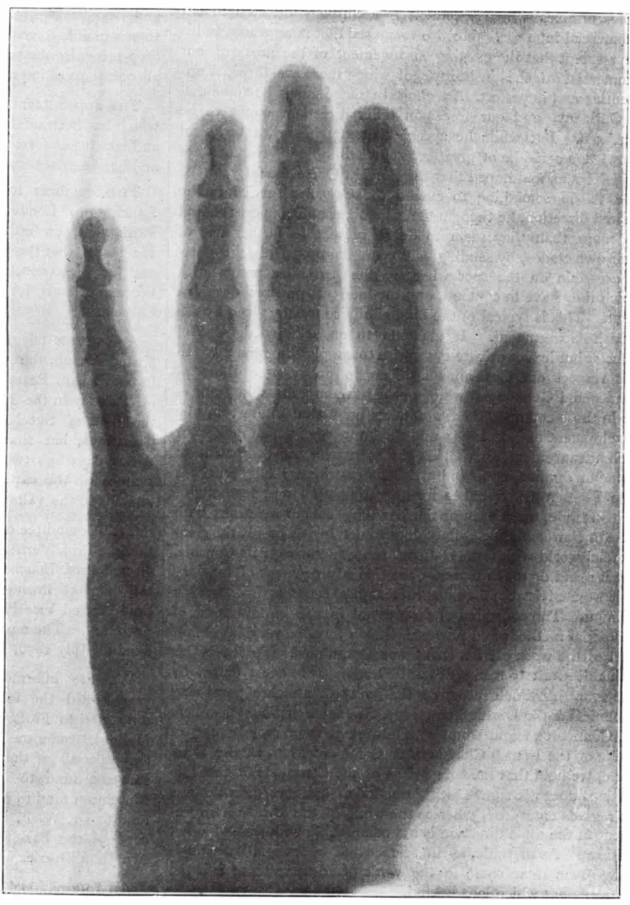

英文
英文斯温顿
编者按
距离伦琴最初宣布发现X射线还不到一个月，就有了这篇对伦琴的发现的查证，这是一个应该引起人们警醒的事例，它表明科学界同行对重大发现的态度也会是冷淡的。坎贝尔–斯温顿含蓄地指出，报业为之感到兴奋的现象实际上并不是一个“全新的”现象。但他之所以这样说是因为他在某种程度上误会了伦琴得到的结论。斯温顿坚持把X射线看作是“阴极射线的一部分”，并指出人们早就知道阴极射线能够用于拍摄照片，可他没有注意到伦琴所称的X射线根本就不是阴极射线。 英文
前一段时间，关于伦琴教授的实验的新闻报道引起了相当广泛的关注。不过，这一发现似乎并不是全新的，因为赫兹就曾注意到从克鲁克斯管或希托夫管中发射出来的阴极射线能够穿透金属薄片，而大约两年前莱纳德就在其发表的研究报告中明确地指出这种射线可以产生影像。莱纳德使用了一个带铝窗的管子，阴极射线可以比较容易地从此窗中穿出，伦琴的实验中则是射线穿过了插在管窗与照相干版之间的纸板和铝片。实际上，莱纳德得到了与伦琴的结果几乎完全一样的阴影图像。 英文
不过，伦琴教授已经阐明这个铝窗并不是必需的，因为一部分能够引起成像的阴极辐射是从玻璃管壁中穿出的。此外，他还以一种能给人们留下深刻印象的方式推广了莱纳德得到的结果，而也许最为重要的是，他发现了一个极为新奇的现象，即这种辐射穿透骨骼的能力比穿透肌肉的能力差很多，如果将活人的手置于克鲁克斯管与照相干版之间，就能得到一张非常清晰地显示出骨骼关节轮廓的阴影图像。 英文
最近，许多日报都刊载了来自维也纳的电报，根据其中提供的线索，在斯坦顿先生的协助下，我已经完全成功地重复了伦琴教授的很多实验。在最初的一次实验中，我们将一张普通的凝胶溴化物照相干版放置在普通相机后面。背面的木质快门始终保持关闭状态，并紧接着放置各种物品，诸如硬币、木块、炭、硬质橡胶、硬化纤维和铝等，所有这些物品对于普通的可见光都是完全不透明的。在这些物品上方固定一个已经激发了几分钟的克鲁克斯管。显影后，放置的所有物品的阴影都清晰可见，其中一些物品的阴影比其他的更加明显。在后来的实验中，我们尝试着将薄铝板或黑色硬化纤维薄板插入待成像的物体与感光表面之间，这一薄板用来代替相机后的木质快门。用这种方式我们得到了更加清晰的阴影图像。大部分厚金属板对于这种辐射似乎都是完全不透明的，而铝板则似乎比较透明。硬质橡胶、硬化纤维、炭、木块、纸板、皮革以及石板都是非常透明的，相反，玻璃则是非常不透明的。薄金属板是中等透明的，不过也不全是这样。 英文
为了支持该辐射更类似于紫外线而不是红外线的观点，我们要说明一下，与碘的二硫化碳溶液相比，明矾的水溶液对该辐射的透明度明显好得多。 英文
就我们的实验情况来说，如果不进行很长时间的曝光，单靠将一个普通的拉姆科夫感应线圈与克鲁克斯管直接相连，即使是用大号的线圈，看起来似乎也无法使克鲁克斯管产生足够引起成像活性的激发辐射。不过，我们常说的高频电流看来能够给出好的结果。我们在实验中使用的克鲁克斯管，是由特斯拉油线圈的次级电路产生的电流来激发的，通过其初级电路的是连续放电的12个半加仑莱顿瓶，这些莱顿瓶通过电压约为20,000伏特的交流电进行充电，此交流电由一高压端带有放电间隙的变压器产生。 英文
要获得无生命物体的阴影或检验不同物质对此种辐射的相对透明度，使用哪种结构的克鲁克斯管看起来并不是非常要紧，尽管我们发现某些结构的管子比另外一些好一点。但是，在获取人手的影像时，重要的是得到骨骼的清晰阴影，那么所使用的管子的特殊结构以及管子相对于人手和感光干版的位置就显得至关重要了。到目前为止，由于管子经常因其末端过热而毁坏，我们还没能弄清楚对于上述目的来说什么样的管子结构和摆放位置是最好的，不过能够确定的是，管子中的电极应该采用平板电极而不是曲面电极，并且应该用尺寸较小的电极板。 英文
本文所附的活人手掌的影像（图1）是该辐射穿过厚度为0.0075的铝片持续曝光20分钟而得到的，实验中使用的克鲁克斯管中包含某种白色磷光物质（可能是硫化钡），管子颠倒后垂直放置，其最低点位于掌心上方大约2英寸处。 英文

图1．活人手掌的影像 英文
用一块黑色硬化纤维薄板代替铝板后，我们发现可以把曝光时间缩短到4分钟。实际上，在使用铝板的情况下，20分钟的曝光时间似乎也比必需的曝光时间长一些。此外，考虑到玻璃很显著的不透明性，看来在使用普通克鲁克斯管时，大部分能够形成影像的辐射一定被管子自身的玻璃壁吸收了。如果确实如此，那么使用部分为铝质材料的管子（如同莱纳德所用的那样）的话，必需的曝光时间应该会大大缩短。 英文
（王耀杨 翻译；江丕栋 审稿）